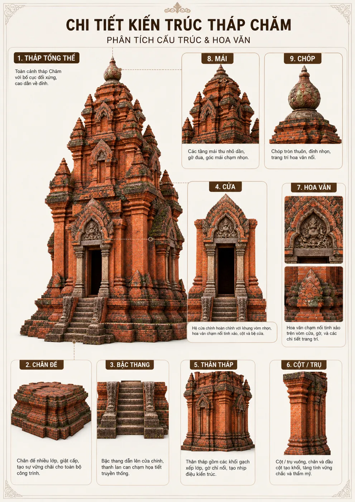

Cửa tháp
Ảnh minh họa dùng cho hệ cửa; trong mô hình mỗi mặt có các cửa theo tầng.
CÓ THỂ CLICKPhần này cung cấp mô tả ngắn gọn, dễ đọc về lịch sử, loại hình tháp và những địa điểm tiêu biểu còn tồn tại ở Việt Nam.
Tháp Chăm là loại hình kiến trúc tôn giáo của vương quốc Champa, phát triển mạnh từ khoảng thế kỉ VII đến XVII. Nhiều tháp dùng để thờ thần Shiva, thần Vishnu, nữ thần Bhagavati/Po Nagar hoặc thờ các vị vua được thần thánh hóa sau khi qua đời.
Mô hình 3D hiện tại là một tháp Chăm tổng hợp do AI dựng từ ảnh tham chiếu, nên nó đại diện cho phong cách kiến trúc Chăm nói chung, không phải bản khảo cổ chính xác 100% của một tháp đơn lẻ cụ thể. Tuy vậy, bố cục cửa, thân, mái, chóp, gạch và hoa văn đều bám sát ngôn ngữ hình khối của tháp Chăm.

Ảnh minh họa dùng cho hệ cửa; trong mô hình mỗi mặt có các cửa theo tầng.
CÓ THỂ CLICKCụm bậc ở phần đáy dẫn lên cửa trước, tách riêng khỏi đế tháp.
CÓ THỂ CLICKPhần bệ giật cấp nâng đỡ toàn bộ công trình, không tính cầu thang.
CÓ THỂ CLICKẢnh chi tiết chung cho các cột/trụ trong mô hình.
CÓ THỂ CLICKKhối ở vị trí cao nhất, tách rõ khỏi các tầng mái phía dưới.
CÓ THỂ CLICKKhối tường chính của công trình, dùng để học cấu trúc tổng thể.
HÌNH HỌC TẬPHệ tầng mái thu nhỏ dần khi lên cao.
HÌNH HỌC TẬPCác mảng trang trí ở vòm cửa, gờ và bề mặt kiến trúc.
HÌNH HỌC TẬP